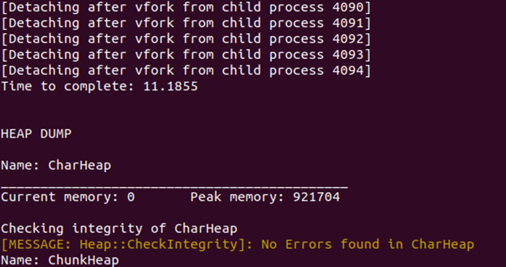

<link
  rel="stylesheet"
  href="https://use.fontawesome.com/releases/v5.8.2/css/all.css"
  integrity="sha384-oS3vJWv+0UjzBfQzYUhtDYW+Pj2yciDJxpsK1OYPAYjqT085Qq/1cq5FLXAZQ7Ay"
  crossorigin="anonymous"
/>

<link rel="preconnect" href="https://fonts.gstatic.com">
<link href="https://fonts.googleapis.com/css2?family=Roboto+Mono:wght@300&display=swap" rel="stylesheet">
<link href="https://fonts.googleapis.com/css2?family=Raleway:wght@600&display=swap" rel="stylesheet">
<link href="https://fonts.googleapis.com/css2?family=Roboto+Condensed:wght@300&display=swap" rel="stylesheet">
<link rel="stylesheet" href="info.css">

<head>
<meta name="viewport" content="width=device-width">
<title>CPU Based Ray Tracer</title>
</head>

<main>
  <nav id="navbar">
    <h2 id = "projectTitle">CPU Based Ray Tracer</h2>
    <a href="index.html">Back</a>
  </nav>

<p>This project was created as part of my Low Level Games Programming module in order to learn advanced memory management skills such as memory pools, heaps, and memory tracking systems. It was also created to learn the threading systems in C++11 and learning how to use Unix processes. The program given to us at the start of the module featured no memory management or multithreading and was also heavily unoptimized. It produced a 4 second long video of raytraced spheres shrinking and growing each frame. This originally was a 39 second process to generate these 100 frames and was then bought down to 6 seconds with the use of file IO improvements, multithreading and memory pools to reduce dynamic allocations throughout the programs runtime. </p>
<p>Built in C++14</p>
<p>Built in 3 months. October 2021 - January 2022</p>
  <button><a href="https://github.com/AdamHarris-GamesProgrammer/Low-Level-Games-Programing" target="_blank">GitHub Repository</a></button>
  <div id = "body">
    <h2>Features</h2>
    <div class="features">
      <div>
        <p>Advanced Memory Management</p>
        <li>Memory Pools</li>
        <li>Heaps</li>
        <li>Heap Integrity Checks</li>
        <li>Overriding new and delete operators</li>
        <p>multithreading using std::thread for windows and Unix processes for Linux builds</p>
        <div class="videoFrame"></div>
      </div>
      <div>
        <p>Multi-Platform Compatibility</p>
        <li>This program was originally built for Windows and then ported to Linux in order to learn how multithreading works on different platforms</li>
          <div class="videoFrame"></div>
      </div>
    </div>
    <div>
      <h2>Tweets</h2>
      <div class="tweets">
        <blockquote class="twitter-tweet"><p lang="en" dir="ltr">Gotta love some CPU-based raytraced spheres. These are drawn based of a JSON file, would be nice to add some support for changing colours and sizes during runtime rather than a linear movement change <a href="https://twitter.com/hashtag/programming?src=hash&amp;ref_src=twsrc%5Etfw">#programming</a> <a href="https://twitter.com/hashtag/cpp?src=hash&amp;ref_src=twsrc%5Etfw">#cpp</a> <a href="https://twitter.com/hashtag/graphics?src=hash&amp;ref_src=twsrc%5Etfw">#graphics</a> <a href="https://twitter.com/hashtag/technology?src=hash&amp;ref_src=twsrc%5Etfw">#technology</a> <a href="https://t.co/FbH2XAtnil">pic.twitter.com/FbH2XAtnil</a></p>&mdash; Adam Harris (@AdamHarrisDev) <a href="https://twitter.com/AdamHarrisDev/status/1456310469485080586?ref_src=twsrc%5Etfw">November 4, 2021</a></blockquote> <script async src="https://platform.twitter.com/widgets.js" charset="utf-8"></script>
      </div>
    </div>
    <div>
      <h2>Challenges</h2>
      <p>Implementing Memory Management tools. This was my first time implementing memory tracking tools into a project and as such involved learning a lot of new features of the C++ language, such as using malloc, free, and memset. </p>
      <p>Implementing Multithreading. While I have done some multithreaded programming in the past I have never done multithreading at this scale before where it was crucial that there would be no problems with race conditions or synchronicity. </p>
      <p>Optimizing file IO. When I started this project I had no idea how slow and inefficient utilising string streams and ofstreams were when compared to using C style strings and C file IO. Changing the program to write files using these was a challenge at first as it involved learning a lot of new lower level syntax, eventually the C style file IO did work but it did take a long time to implement.</p>
    </div>
  </div>

  <footer id="footer">
    <h3 id="footer-text">Adam Harris &copy;2021</h3>
  </footer>
</main>
